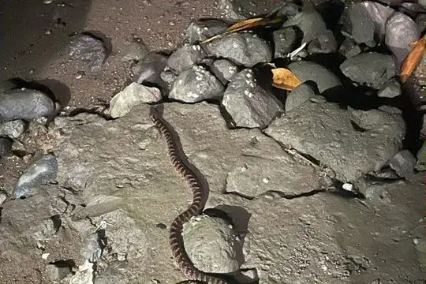
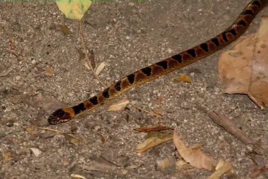
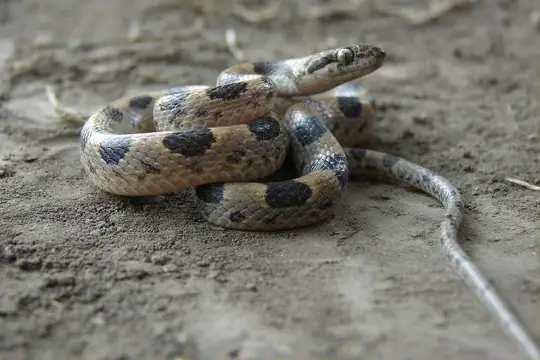
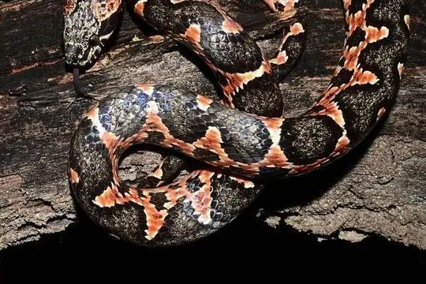
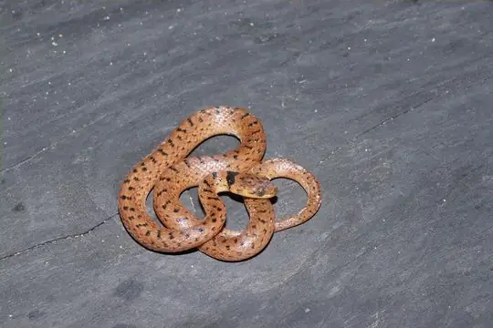

Leptodeira
The genus Leptodeira (family Colubridae) has 16 species in SnakeList (none venomous), recorded in 23 countries.
- 16species
- 16non-venomous
- 23countries
Species
Showing 16 species
 Ashmead's Banded Cat-eyed SnakeLeptodeira ashmeadii
Ashmead's Banded Cat-eyed SnakeLeptodeira ashmeadii Baker's Cat-eyed SnakeLeptodeira bakeri
Baker's Cat-eyed SnakeLeptodeira bakeri Banded Cat-eyed Snake (annulata)Leptodeira annulata
Banded Cat-eyed Snake (annulata)Leptodeira annulata Black-banded Cat-eyed SnakeLeptodeira nigrofasciata
Black-banded Cat-eyed SnakeLeptodeira nigrofasciata Cat-eyed Snake (septentrionalis)Leptodeira septentrionalis
Cat-eyed Snake (septentrionalis)Leptodeira septentrionalis- No photo yetJubones Cat-eyed SnakeLeptodeira misinawui

Mangrove Cat-eyed SnakeLeptodeira rubricata Ornate Cat-eyed SnakeLeptodeira ornata
Ornate Cat-eyed SnakeLeptodeira ornata Peruvian Cat-eyed SnakeLeptodeira larcorum
Peruvian Cat-eyed SnakeLeptodeira larcorum Rainforest Cat-eyed SnakeLeptodeira frenata
Rainforest Cat-eyed SnakeLeptodeira frenata
Southwestern Cat-eyed SnakeLeptodeira maculata
Splendid Cat-eyed SnakeLeptodeira splendida
Uribe's False Cat-eyed SnakeLeptodeira uribei
Western Cat-eyed SnakeLeptodeira punctata- No photo yetLeptodeira polysticta
 Leptodeira rhombifera
Leptodeira rhombifera
No snakes in Leptodeira match.
About the genus Leptodeira
- Family: Colubridae.
- Recorded in: Argentina, Aruba, Belize, Bolivia, Brazil, Colombia, Costa Rica, Curaçao, Ecuador, El Salvador, French Guiana, Guatemala, Guyana, Honduras, Mexico, Nicaragua, Panama, Paraguay, Peru, Suriname, Trinidad and Tobago, United States, Venezuela.